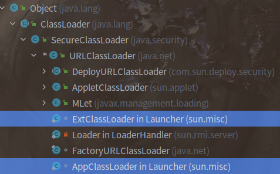
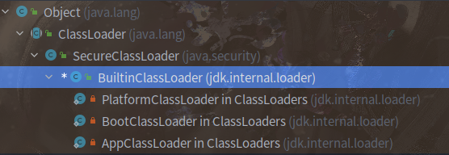
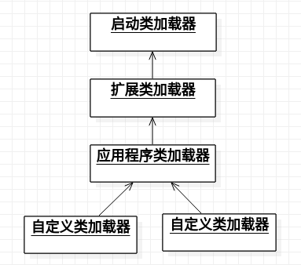
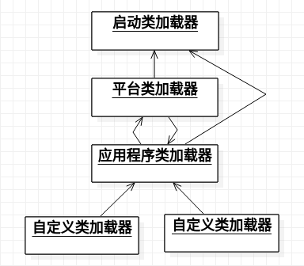
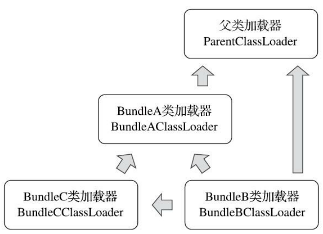

Java 虚拟机中的任意一个类都必须由加载它的类加载器和它本身来确定唯一性，同一个 Class 文件由不同的类加载器加载，那么产生的两个类也是不同的。类的相等保括代表类的 Class 对象的 equals() 方法、isInstance() 方法、isAssignableFrom() 方法和 instanceof 关键字的结果。
#三层类加载器
#Java 8 及之前版本
从虚拟机的角度，存在两种不同的类加载器：
- 启动类加载器（Bootstrap Class Loader）：属于虚拟机自身的一部分，在 Hotspot 虚拟机中由 C++ 实现。
- 其他所有的类加载器：独立存在于虚拟机外部，全部继承自抽象类
java.lang.ClassLoader。
从开发者的角度，存在三层类加载器（下面全部针对 Java 8 及之前的版本）：
- 启动类加载器：这个类将器负责将存放在
<JAVA_HOME>/lib目录中的，或者被-Xbootclasspath参数所指定的路径中的，并且是虚拟机识别的（按照文件名识别，如rt.jar、tools.jar，名字不符合的类库即使放在 lib 目录中也不会被加载）类库加载到虚拟机内存中。 - 扩展类加载器（Extension Class Loader）：这个加载器由
sun.misc.Launcher$ExtClassLoader实现，它负责加载<JAVA_HOME>/jre/lib/ext目录中的，或者被java.ext.dirs系统变量所指定的路径中的所有类库，开发者可以直接使用扩展类加载器。（启动类加载器在 Hotspot 虚拟机中是使用 C++ 实现的，因此无法获取到，在自定义的类加载器中想要委派启动类加载器处理直接使用 null 代替。） - 应用程序类加载器（Application Class Loader）：这个类加载器由
sun.misc.Launcher$AppClassLoader来实现。由于应用程序类加载器是ClassLoader 类中的getSystemClassLoader()方法的返回值，所以有些场合中也称它为“系统类加载器”。它负责加载用户类路径（ClassPath）上所有的类库，开发者同样可以直接在代码中使用这个类加载器。如果应用程序中没有自定义过自己的类加载器，一般情况下这个就是程序中默认的类加载器。
应用程序都是由这三种类加载器互相配合进行加载的，如果有必要，我们还可以加入自定义的类加载器。因为 JVM 自带的 ClassLoader 只是懂得从本地文件系统加载标准的 Java class 文件，因此如果编写了自己的 ClassLoader，便可以做到如下几点：
-
在执行非置信代码之前，自动验证数字签名。（代码加密解密）
-
动态地创建符合用户特定需要的定制化构建类。
-
从特定的场所取得 Java class，例如数据库中和网络中。
#Java 9 中的变化
Java 9 中引入了模块化，因此类加载器也产生了相应的变化，存在的不同主要有：
-
由于模块化，原有的
rt.jar等被拆分成了多个模块（下载的 JDK 相比于之前版本多了 jmods 文件夹），Java 模块化系统明确规定了三个类加载器各自负责加载的模块，启动类加载器负责加载java.base.jmod、java.logging.jmod、java.rmi.jmod等模块。 -
Java 9 之后的版本中存在 BootClassLoader 存在（
jdk.internal.loader.BootClassLoader），但是为了与原来的代码兼容，所有在获取启动类加载器的代码中，仍然返回 null。 -
由于模块化的存在，Java 类库天然可扩展，因此扩展类加载器变为平台类加载器（Platform Class Loader），Java 8 及之前的版本中的 jre 文件夹被取消，因为可以通过命令将模块组合构建出需要的不同的 JRE。
-
Java 8 中的类加载器继承关系与 Java 9 中的类加载器的继承关系的对比。


#双亲委派模型
#Java 8 及之前
如果一个类加载器收到了类加载的请求，它首先不会自己去尝试加载这个类，而是把这个请求委派给父加载器去完成，每一个层次的类加载器都是如此，因此所有的加载请求最终都应该传送到最顶层的启动类加载器中，只有当父加载器反馈自己无法完成这个加载请求（它的搜索范围中没有找到所需的类）时，子加载器才会尝试自己去完成加载。
|
|

|
|
双亲委派模型使得 Java 类随它的加载器一起具备了一种带有优先级的层次关系。例如类 java.lang.Object，它存放在 rt.jar 之中，无论哪一个类加载器要加载这个类，最终都是委派给处于模型最顶端的启动类加载器进行加载，因此 Object 类在程序的各种类加载器环境中都是同一个类。相反，如果没有使用双亲委派模型，由各个类加载器自行去加载的话，如果用户自己编写了一个称为 java.lang.Object 的类，并放在程序的 ClassPath 中，那系统中将会出现多个不同的 Object类，Java 类型体系中最基础的行为也就无法保证，应用程序也将会变得一片混乱。
双亲委派的意义在于：
- 防止系统类在内存中存在多份相同的字节码
- 保证 Java 程序安全稳定的运行
#Java 9 及之后
当平台及应用程序类加载器收到类加载请求，在委派给父加载器加载前，要先判断该类是否能够归属到某一个系统模块中，如果可以找到这样的归属关系，就要优先委派给负责那个模块的加载器完成加载。Java 模块化系统明确规定了三个类加载器各自负责加载的模块。

|
|
#双亲委派模型的打破
- 双亲委派模型在 JDK 1.2 中引入，JDK 1.2 之前使用在自定义类加载器中重写
loadClass()的方法实现自定义类加载器，而双亲委派的实现就在loadClass()方法中。因此在自定义类加载器时，重写findClass()方法而不是重写loadClass()方法来保证双亲委派模型。 - 线程上下文类加载器（Thread Context Class Loader），用来加载 SPI （Service Provider Interface，服务提供者接口）。比如 JNDI、JDBC 等，它们定义的接口属于核心库，是由启动类加载器加载的，但是启动类加载器不可能认识第三方实现的 SPI，因此请求线程上下文类加载器（线程上下文类加载器默认设置为应用程序类加载器）加载 SPI 实现的类。线程上下文类加载器破坏了“双亲委派模型”，可以在执行线程中抛弃双亲委派加载链模式，使程序可以逆向使用类加载器。（Java 6 中引入 ServiceLoader 类通过配置文件来实现 SPI 的加载）
- 代码热替换、模块热部署，不重启系统添加新的代码或模块。
- Java 9 模块化的委派加载。
#OSGi(Open Service Gateway Initiative)
OSGi（开放服务网关倡议）是 OSGi 联盟制定的一个基于 Java 语言的动态模块化规范，有 Knopflerfish、Apache Felix 以及 Equinox 等实现。OSGi 能够实现模块热插拔和模块内部可见性的精准控制，原因在于加载器之间的关系不再是双亲委派模型的树状结构,而是发展成复杂的网状结构，Bundle 之间的依赖关系从传统的上层模块依赖底层模块转变为平级模块之间的依赖。
OSGi 中的模块称为 Bundle，Bundle 是一个带有元数据的 jar，包含了 class 和一些描述。Bundle 里面会声明 Export-Package （允许导出发布的 package）和 Import-Package（所依赖的 package），一个 Bundle 中的 class 只有在 Export-Package 中才可以被外界访问，实现了 package 粒度的可见性控制。也就是说模块之间 class 的相互依赖和影响，可以精确到 package 粒度，一个模块只会感知到其他模块 export 的 package，没有 export 会被完全隐藏起来。
假设存在 Bundle A、Bundle B、Bundle C 这 3 个模块，并且这 3 个 Bundle 定义的依赖关系如下：
- Bundle A：声明发布了 package A，依赖了
java.*的包； - Bundle B：声明依赖了 package A 和 package C，同时也依赖了
java.*的包； - Bundle C：声明发布了 package C，依赖了 package A。

OSGi 类加载的规则：
- 以
java.*开头的类，委派给父类加载器加载。 - 否则，委派列表名单内的类，委派给父类加载器加载。
- 否则，Import 列表中的类，委派给 Export 这个类的 Bundle 的类加载器加载。
- 否则，查找当前 Bundle 的 Classpath，使用自己的类加载器加载。
- 否则，查找是否在自己的 Fragment Bundle 中，如果是则委派给 Fragment Bundle 的类加载器加载。
- 否则，查找 Dynamic Import 列表的 Bundle，委派给对应 Bundle 的类加载器加载。
- 否则，类查找失败。
但这种模式也会产生许多隐患，比如循环依赖问题，如果 Bundle A 依赖 Bundle B , Bundle B 依赖 Bundle C， Bundle C 又依赖 Bundle A， 这可能在加载 Bundle 的时候导致死锁问题。为了避免这种情况，根据 OSGi 规范说明，在这种情况下，框架必须在第一次访问 Bundle 的时候做标记，不去访问已经访问过的 Bundle。
#参考
[1] 深入理解 Java 虚拟机: JVM 高级特性与最佳实践（第 3 版）. 周志明. 机械工业出版社.
[2] 理解 Java 类加载机制
[4] OSGi：灵活的类加载器架构
[5] 类加载及执行子系统的案例与实战